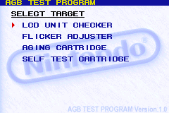
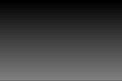

AGB Aging Cartridge (World) (v1.0) (Test Program)
EEPROM 64K
Cartridge Identity
- Game Code
TCHK(FamilyTCH)- Header Title
AGB CHECKER- Maker / Revision
01/ rev0- ROM Size
- 4.0 MiB (4,194,304 B)
- Save Media
EEPROM 64K- SHA-256
61f4222cb17fc0ac49f8779298433c293f52266a23722965575ceceb150d8a7c- Engine / SDK Group
comm-001(196 families)
Screenshots


Observed Battery Save Layout
- Fill Byte & Active Size
0x00fill · 510–511 / 8,192 B active (entropy 0.14 bits/B)- Active Offset Ranges
0x1–0x1FF(1 total)- ASCII Magic / Headers
MORPEE,TINUDCL- Observed Variable Regions
- 8 bytes across 1 spans:
0x8–0xF - Candidate Checksum/Counter Spans
- None
ROM Assets, Compression & Audio
- BIOS Compression
- LZ77 (
0x10): 0 streams · RLE (0x30): 0 streams - ROM Pointer Tables
- 6 tables (0 pointing to validated compressed streams)
- SDK Backup Tags
EEPROM_V110
Hardware MMIO Subsystems
ppu_display0x8000efc,0x80035cc,0x800bf80,0x800cf54
Regional Variants & Revisions (Family TCH)
- AGS Aging Cartridge (World) (Rev 1) (v7.0) (Test Program) (
TCHK, 4 MiB) - AGS Aging Cartridge (World) (Rev 3) (v9.0) (Test Program) (
TCHK, 4 MiB) - AGS Aging Cartridge (World) (v10.0) (Test Program) (
TCHK, 1.3 MiB) - AGS Aging Cartridge (World) (v7.1) (Test Program) (
TCHK, 8 MiB)